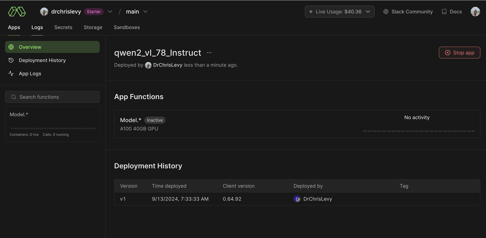
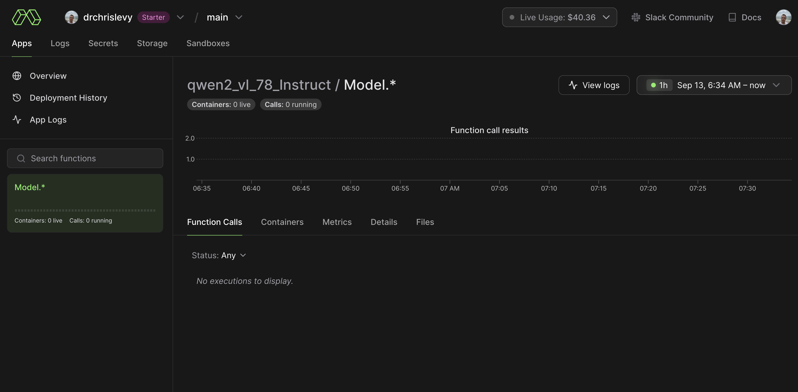

import modal
app = modal.App("hello-modal")
@app.function()
def f(i):
print(f"hello modal! {i} + {i} is {i+i}\n")
return i
@app.local_entrypoint()
def main():
print("This is running locally")
print(f.local(1))
print("This is running remotely on Modal")
print(f.remote(2))
print("This is running in parallel and remotely on Modal")
total = 0
for ret in f.map(range(2500)):
total += ret
print(total)Intro
In my professional life I write code which ends up on a production environment, supported by sophisticated DevOps infrastructure. This system leverages a suite of tools such as Kubernetes, Rancher, Karpenter, Helm charts, Argo CD, GitHub Actions, and of course AWS. I’m fortunate to work alongside an exceptional DevOps team that keeps this complex machinery running smoothly. While I’m not deeply involved in the nitty-gritty of DevOps and infrastructure, I’m certainly exposed to it.
On the other hand, I also crave the simplicity of building and tinkering without infrastructure concerns, especially in my free time. Ideally, I’d work directly with Python code using just my IDE and terminal. I’d rather avoid writing another YAML file or worrying about spinning up instances, managing IAM roles, installing CUDA drivers, or juggling multiple microservices and containers. What I seek is a streamlined development experience that lets me focus on creativity and problem-solving, not infrastructure management.
This is where Modal enters the picture. I’m genuinely excited about Modal and consider it the most impressive platform I’ve encountered for running code without infrastructure concerns. Modal is a serverless platform designed for Data/ML/AI teams that seamlessly bridges the gap between local development and cloud execution. The primary interface is a Python SDK, where decorators are used to quickly move function execution into the cloud. You write your code as if it were running locally, and Modal effortlessly deploys and runs it in the cloud. This approach offers the best of both worlds: the simplicity of local development with the power and scalability of cloud computing.
Modal didn’t simply create a wrapper on top of Kubernetes or Docker. While I won’t even pretend to understand the engineering behind it; it’s clearly their secret sauce. From what I’ve read and heard, they’ve built their own systems from scratch in Rust, including a container runtime, custom file system, custom image builder, and custom job scheduler. This allows for launching containers in the cloud within seconds.
For many AI applications, GPUs are a necessity. This can be a barrier for developers, including myself, who don’t have access to a local GPU. This is where Modal can really shine, providing easy access to GPU resources in the cloud within an isolated environment. You can experiment within the isolated environment without worrying about messing up your local machine.
Of course there are many great options out there for spinning up GPU instances in the cloud. Some of the other platforms I enjoy are Jarvis Labs, Lambda Labs, and RunPod. I have tried all of these and I like them. I have even written previously about using some of these services here and here. Modal is offering something different though. It’s the developer experience that has hooked me on Modal. It’s the lower cold start times and the feeling of developing locally that make it so nice.
I should note that I have only used Modal for personal projects and tinkering around with various ideas. However, I anticipate incorporating it more into my professional work, particularly for research projects and proofs of concept. Looking ahead, I can envision leveraging Modal directly in our production environment as well. It seems particularly well-suited for deploying complex AI models that require specific container configurations and GPU resources, especially in scenarios with unpredictable or spiky traffic patterns.
If you want to learn more about the history of Modal or keep up with the latest news, I recommend the following resources:
- Modal Website
- Modal X Account
- Modal Slack Account (They are so helpful and responsive on Slack)
- Charles Frye X Account (AI Engineer at Modal)
- Erik Bernhardsson X Account (CEO at Modal)
- 1 to 100: Modal Labs (Interview with Erik Bernhardsson)
- Why you should join Modal (Article)
- What I have been working on: Modal (Older article with relevant background)
Why am I writing this post?
I could simply direct you to the Modal Documentation, which is exceptionally comprehensive and well-crafted. In fact, it’s so good that I doubt I could do it justice in a single post. However, I’m currently investing time in learning Modal, and what better way to solidify my understanding than by writing about it? Even if it means repeating some of the information in the documentation, it will still be a valuable exercise. Moreover, I’m eager to spread the word about this game-changing platform that I believe is still flying under the radar for many developers. By sharing my experiences and insights, I hope to contribute to the growing community of Modal enthusiasts.
Setting Up Modal
# create an account at modal.com
pip install modal
modal setup🚀✨ That is like zero friction! ✨🚀
Hello Modal
Okay let’s write our first function and run it in the cloud.
We decorated our function with the primary logic and then decorated the entry point. We can call the function locally, remotely, in parallel and remotely on Modal. Here is a video showing the output when running the code. We run it with this command:
modal run hello_modal.py
Take a moment to let that sink in! We can run the code on a remote server and see the output and print statements locally. Imagine trying to do that with a traditional server where you have to log in and manually copy the logs. This is a simple function, but the ability to run it remotely on Modal and get the output locally is quite impressive. Modal handles spinning up containers and managing everything else seamlessly.
Shell into your container
We will see in later examples how to customize the environment of the container. But even with this simple example, we can shell into the default container and poke around. There are numerous ways to develop and debug your application with Modal.
Here we use the modal shell command to quickly create a container and shell into it.
modal shell hello_modal.py::fThis video shows how easy it is to shell into the container.
By shelling into the container you get direct access to that isolated environment. You can inspect the file system, test the installation of additional dependencies, and generally look around to ensure your application is configured correctly.
Image Generation with Flux Models from Black Forest Labs
Let’s dive into our first “real” and exciting example. If you haven’t heard already, the new Flux image generation models from Black Forest Labs are truly impressive. One of the easiest ways to try them out is through Replicate.
What’s particularly appealing about the two smaller Flux models is that their weights are open and available for download. Running these models using the transformers and diffusers libraries is relatively straightforward. You can find an example in the model card here - it only takes a handful of lines of code!
Here is some code to create an endpoint hosted through Modal, allowing you to generate images. You can read the Modal documentation for all the details, but here are some features worth pointing out:
- We defined a specific container with
Image.debian_slim(python_version="3.11").run_commands(.....- I did not know what to put here initially. I just started with a blank slate and then shelled into the container and tried running snippets of code until I figured out what I needed. It’s an iterative process where you build up your container with whatever dependencies you need.
- We use the Modal class syntax.
@enter- Called when a new container is started. Useful for loading weights into memory for example.@build- Code that runs as a part of the container image build process. Useful for downloading weights.- In the case of Hugging Face diffusers models, the weights only have to be downloaded once and future containers will only need to load the weights into memory. This means the initial build process takes longer but subsequent builds are much faster. Especially since Modal has done all the heavy lifting and engineering to make containers load very fast.
@modal.web_endpoint(method="POST", docs=True)is used to create a web server using FastAPI under the hood. See here for more information on creating web endpoints.- Modal has multiple ways to deal with secrets and environment variables. See here for more information. Here I am making use of
Secret.from_dotenv()to load the Hugging Face token from a .env file. gpu="A100"- GPU acceleration!.
import modal
from modal import Image, build, enter
import os
from dotenv import load_dotenv
load_dotenv()
app = modal.App("black-forest-labs-flux")
image = Image.debian_slim(python_version="3.11").run_commands(
"apt-get update && apt-get install -y git",
"pip install torch torchvision torchaudio --index-url https://download.pytorch.org/whl/cu124",
"pip install transformers",
"pip install accelerate",
"pip install sentencepiece",
"pip install git+https://github.com/huggingface/diffusers.git",
"pip install python-dotenv",
f'huggingface-cli login --token {os.environ["HUGGING_FACE_ACCESS_TOKEN"]}',
)
@app.cls(image=image, secrets=[modal.Secret.from_dotenv()], gpu="A100", cpu=4, timeout=600, container_idle_timeout=300)
class Model:
@build()
@enter()
def setup(self):
import torch
from diffusers import FluxPipeline
from transformers.utils import move_cache
# black-forest-labs/FLUX.1-schnell
# black-forest-labs/FLUX.1-dev
self.model = "black-forest-labs/FLUX.1-schnell"
self.pipe = FluxPipeline.from_pretrained(self.model, torch_dtype=torch.bfloat16).to("cuda")
move_cache()
@modal.web_endpoint(method="POST", docs=True)
def f(self, data: dict):
import torch
import random
from io import BytesIO
import base64
prompts = data["prompts"]
fnames = data["fnames"]
num_inference_steps = data.get("num_inference_steps", 4)
seed = data.get("seed", random.randint(1, 2**63 - 1))
guidance_scale = data.get("guidance_scale", 3.5)
results = []
for prompt, fname in zip(prompts, fnames):
image = self.pipe(
prompt,
output_type="pil",
num_inference_steps=num_inference_steps,
generator=torch.Generator("cpu").manual_seed(seed),
guidance_scale=guidance_scale,
).images[0]
# Convert PIL image to bytes
buffered = BytesIO()
image.save(buffered, format="PNG")
img_str = base64.b64encode(buffered.getvalue()).decode()
results.append(
{
"filename": f"{fname}_guidance_scale_{guidance_scale}_num_inference_steps_{num_inference_steps}_seed_{seed}_model_{self.model.replace('/', '_')}.png",
"image": img_str,
}
)
return resultsYou can serve it for testing with this command:
modal serve flux.pyI sped up the video, but here are some takeaways:
- The app starts immediately with 0 containers. The cost is zero. Containers are only spun up when the first request comes in.
- I had already built the container image so this time around the model weights were already within the container image. On the first request to the endpoint the container spins up and the model weights are loaded into memory.
- Once the weights are loaded into memory, subsequent requests are much faster.
container_idle_timeoutis set to 300 seconds. This means the container will be terminated after 300 seconds of inactivity so it scales down to 0 containers. But the endpoint application is still running and can scale back up when the next request comes in.
Here is some inference code so we can hit the endpoint and download the images locally. This code will work as long as the endpoint is running.
def main():
import requests
import base64
import os
os.makedirs("images", exist_ok=True)
# Your API endpoint URL
API_URL = "https://drchrislevy--black-forest-labs-flux-model-f-dev.modal.run" # Replace with your actual Modal app URL
# Sample data
data = {
"prompts": [
"A pristine tropical island paradise with crystal-clear turquoise waters lapping at white sandy shores. Palm trees sway gently in the breeze along the coastline. In the foreground, the words 'Welcome to Modal' are elegantly written in the smooth wet sand, with small seashells decorating the letters. The sun is setting in the background, painting the sky with vibrant hues of orange, pink, and purple. A few scattered clouds reflect the warm sunset colors.",
],
"fnames": [
"modal_island"
],
"num_inference_steps": 4,
"guidance_scale": 5,
}
# Make the API request
response = requests.post(API_URL, json=data)
if response.status_code == 200:
results = response.json()
for result in results:
filename = result["filename"]
img_data = base64.b64decode(result["image"])
with open(os.path.join("images", filename), "wb") as f:
f.write(img_data)
print(f"Saved: {filename}")
else:
print(f"Error: {response.status_code}")
print(response.text)
print("All images have been downloaded to the 'images/' folder.")Here is a video of running the inference code, inspecting the Modal application dashboard, and viewing downloaded images on my local machine. The video is also sped up.
One awesome thing about Modal is that it scales automatically with the number of requests. You can tweak parameters to control the behavior of the scaling, and you can refer to the documentation for the details. Let’s illustrate this with running the larger Flux model, "black-forest-labs/FLUX.1-dev".
Im going to change the request payload to
# Sample data
data = {
"prompts": [
"Futuristic spaceship wreckage overgrown with lush forest vegetation",
"Pristine tropical island with crystal-clear blue waters and white sandy beaches",
"Abandoned, overgrown streets of post-apocalyptic Boston from The Last of Us",
],
"fnames": ["sci_fi_forest_ship", "tropical_island_paradise", "last_of_us_boston"],
"num_inference_steps": 50,
"guidance_scale": 3.5,
}In the video I’m going to kick off 10 requests to the endpoint in 10 shells, all in parallel. You will see the containers spin up and then back down automatically. For this demo I also changed container_idle_timeout to 10 seconds so the containers are terminated quickly. The video is sped up at 5X the speed.
Qwen2-VL: Vision Language Model
Qwen2-VL is a recent vision language model from the Qwen team. Here is a post about it, and also the the Hugging Face model card for the 7B parameter model. I wanted to experiment with this model and make use of flash attention during inference.
First, lets get into setting up the container with the CUDA environment. There are different ways of using CUDA on Modal. Since Modal supports the underlying CUDA stack, it’s often very easy to get started by simply using pip to install your libraries. Here is an example straight out of their documentation:
image = modal.Image.debian_slim().pip_install("torch")
@app.function(gpu="any", image=image)
def run_torch():
import torch
has_cuda = torch.cuda.is_available()
print(f"It is {has_cuda} that torch can access CUDA")
return has_cudaEasy!
Other use cases may require a more involved installation setup. One such example is using flash attention. Luckily, Modal also documented this common use case and how to go about setting up the environment. So that is what I started with. I shelled into the container and ran bits of code while debugging the environment until I got it working. You can see the full code for the container image below. One trick is that you can use .run_commands( and .pip_install multiple times within the code that builds the container image. This is convenient to cache the parts of the container installation that are working while you are still debugging. That way if you are experimenting with one part such as the the final line, .run_commands("pip install flash-attn --no-build-isolation"), you don’t have to rerun the entire container build every time you make a small change.
import modal
from modal import build, enter
import os
from dotenv import load_dotenv
load_dotenv()
app = modal.App("qwen2_vl_78_Instruct")
cuda_version = "12.4.0" # should be no greater than host CUDA version
flavor = "devel" # includes full CUDA toolkit
operating_sys = "ubuntu22.04"
tag = f"{cuda_version}-{flavor}-{operating_sys}"
image = (
modal.Image.from_registry(f"nvidia/cuda:{tag}", add_python="3.11")
.apt_install("git")
.pip_install(
"ninja", # required to build flash-attn
"packaging", # required to build flash-attn
"wheel", # required to build flash-attn
)
.run_commands(
"pip install torch torchvision torchaudio --index-url https://download.pytorch.org/whl/cu124",
"pip install git+https://github.com/huggingface/transformers",
"pip install accelerate",
"pip install qwen-vl-utils",
"pip install python-dotenv",
f'huggingface-cli login --token {os.environ["HUGGING_FACE_ACCESS_TOKEN"]}',
)
.run_commands("pip install flash-attn --no-build-isolation")
)
@app.cls(image=image, secrets=[modal.Secret.from_dotenv()], gpu="a100", cpu=4, timeout=600, container_idle_timeout=300)
class Model:
@build()
@enter()
def setup(self):
from transformers import Qwen2VLForConditionalGeneration, AutoProcessor, TextStreamer
import torch
# We recommend enabling flash_attention_2 for better acceleration and memory saving, especially in multi-image and video scenarios.
self.model = Qwen2VLForConditionalGeneration.from_pretrained(
"Qwen/Qwen2-VL-7B-Instruct",
torch_dtype=torch.bfloat16,
attn_implementation="flash_attention_2",
vision_config={"torch_dtype": torch.bfloat16},
device_map="auto",
)
# default processor
self.processor = AutoProcessor.from_pretrained("Qwen/Qwen2-VL-7B-Instruct")
# The default range for the number of visual tokens per image in the model is 4-16384. You can set min_pixels and max_pixels according to your needs, such as a token count range of 256-1280, to balance speed and memory usage.
# min_pixels = 256*28*28
# max_pixels = 1280*28*28
# processor = AutoProcessor.from_pretrained("Qwen/Qwen2-VL-7B-Instruct", min_pixels=min_pixels, max_pixels=max_pixels)
self.streamer = TextStreamer(self.processor, skip_prompt=True, skip_special_tokens=True)
@modal.method()
def f(self, messages_list, max_new_tokens=256, show_stream=False):
from qwen_vl_utils import process_vision_info
def messages_inference(messages):
# Preparation for inference
text = self.processor.apply_chat_template(messages, tokenize=False, add_generation_prompt=True)
image_inputs, video_inputs = process_vision_info(messages)
inputs = self.processor(
text=[text],
images=image_inputs,
videos=video_inputs,
padding=True,
return_tensors="pt",
)
inputs = inputs.to("cuda")
# Inference: Generation of the output
if show_stream:
print("\n\n-----------------------------------------------------------\n\n")
generated_ids = self.model.generate(**inputs, max_new_tokens=max_new_tokens, streamer=self.streamer)
else:
generated_ids = self.model.generate(**inputs, max_new_tokens=max_new_tokens)
generated_ids_trimmed = [out_ids[len(in_ids) :] for in_ids, out_ids in zip(inputs.input_ids, generated_ids)]
output_text = self.processor.batch_decode(generated_ids_trimmed, skip_special_tokens=True, clean_up_tokenization_spaces=False)
return output_text
return [messages_inference(messages) for messages in messages_list]
@app.local_entrypoint()
def main():
s3_bucket = os.environ["S3_BUCKET"] # where my images are hosted
s3_prefix = os.environ["S3_PREFIX"] # where my images are hosted
model = Model()
messages_list = [
[
{
"role": "user",
"content": [
{
"type": "image",
"image": f"https://{s3_bucket}.s3.amazonaws.com{s3_prefix}tropical_island_paradise_guidance_scale_3.5_num_inference_steps_50_seed_5013302010029533033_model_black-forest-labs_FLUX.1-dev.png",
},
{"type": "text", "text": "Give a short description of this image."},
],
}
],
[
{
"role": "user",
"content": [
{
"type": "image",
"image": f"https://{s3_bucket}.s3.amazonaws.com{s3_prefix}sci_fi_forest_ship_guidance_scale_3.5_num_inference_steps_50_seed_6510529542810937186_model_black-forest-labs_FLUX.1-dev.png",
},
{"type": "text", "text": "Give a long detailed description of this image."},
],
}
],
[
{
"role": "user",
"content": [
{
"type": "image",
"image": f"https://{s3_bucket}.s3.amazonaws.com{s3_prefix}tropical_island_paradise_guidance_scale_3.5_num_inference_steps_50_seed_5013302010029533033_model_black-forest-labs_FLUX.1-dev.png",
},
{
"type": "image",
"image": f"https://{s3_bucket}.s3.amazonaws.com{s3_prefix}sci_fi_forest_ship_guidance_scale_3.5_num_inference_steps_50_seed_6510529542810937186_model_black-forest-labs_FLUX.1-dev.png",
},
{"type": "text", "text": "For each image explain whether you think it is real or AI generated. Explain your reasoning."},
],
}
],
]
print("Testing Single Inference with show_stream=True")
print(model.f.remote(messages_list[1:2], max_new_tokens=1000, show_stream=True))
print("Testing Multiple Container with show_stream=False")
for res in model.f.starmap([(messages_list[:1], 1000, False), (messages_list[1:2], 1000, False), (messages_list[2:3], 1000, False)]):
print(res)The function f above takes a list of messages and loops over each one sequentially and handles the inference. There is also the option to pass in a stream=True parameter to get a streaming response as the tokens are generated.
For the test images I am using some images that I generated with Flux earlier. Here are two such images and the descriptions generated from Qwen2-VL, using the code above. For the images on the left I asked for a longer detailed description and for the images on the right I asked for a short description.


And here is the output from the model on where I passed both images into the conversation and asked whether or not they were AI generated.
The first image appears to be a real photograph of a tropical island with clear blue waters and a small sandy beach. The natural lighting, shadows, and details in the water and sky suggest that this is a real image.second image, on the other hand, depicts a futuristic, floating structure covered in vegetation, suspended over a lush, green landscape with a river. The level of detail, the blending of natural and artificial elements, and the overall surreal nature of the scene suggest that this is likely an AI-generated image. The combination of a realistic natural environment with an advanced, almost sci-fi structure is not something typically captured in real photographs.
Here is a video of running the above inference on the container at 5X speed. I first stream one image and then use starmap to spin up 3 containers in parallel to handle 3 different requests.
Multimodal RAG with ColPali
ColPali is an innovative document retrieval model that uses vision language models to efficiently index and retrieve documents based on their visual features. It allows querying images, paragraphs and tables from any document with no pre-processing whatsoever. Instead of chunking up the document pages into embeddings, it instead uses the visual of the entire page/image. I am quite new to ColPali and would like to do a deep dive into it in the near future. I highly recommend the following resources for learning more:
- Paper
- The quick start in the README Original ColPali Repo as well as the sample inference code.
- Recent Talk by Benjamin Clavié: RAG is more than dense embeddings
- Many more links/resources at the end of these slides.
- Hugging Face Model Cards
- There seem to be updates so always look for the latest model.
- Benjamin Clavié wrote a demo notebook here within the AnswerDotAI repo which uses ColPali and Claude 3.5 Sonnet.
- Merve Noyan wrote a notebook here using ColPali and Qwen2-VL.
- Notebook by Jo Bergum on scaling ColPALI with Vespa: Scaling ColPALI (VLM) Retrieval
The function we write will take a pdf_url and a list of queries as input. The ColPali model will be used to generate the most likely page of the PDF that contains the answer for each query. The next step is to use a vision language model to generate an answer to the query using that context (image of the page). For example you could pass the image of the page and the question to OpenAI or Anthropic models. But here we will use Qwen2-VL since we already have code to run that using Modal. This also demonstrates how to invoke deployed functions within Modal that are on different apps/containers.
In order to run this code, we first need to deploy the Qwen2-VL model/app container:
modal deploy qwen2_vl_78_Instruct.py

We can invoke this function from any Python context!
import modal
f = modal.Function.lookup("qwen2_vl_78_Instruct", "Model.f")
messages_list = [] # see how we can pass in a list of messages from previous examples
f.remote(messages_list)We can use this awesome Modal feature to use Qwen2-VL in our ColPali app. Here is the full code for the ColPali app.
import modal
from modal import build, enter
import os
from dotenv import load_dotenv
load_dotenv()
app = modal.App("colpali")
cuda_version = "12.4.0" # should be no greater than host CUDA version
flavor = "devel" # includes full CUDA toolkit
operating_sys = "ubuntu22.04"
tag = f"{cuda_version}-{flavor}-{operating_sys}"
image = (
modal.Image.from_registry(f"nvidia/cuda:{tag}", add_python="3.11")
.apt_install("git", "poppler-utils")
.pip_install(
"ninja", # required to build flash-attn
"packaging", # required to build flash-attn
"wheel", # required to build flash-attn
)
.run_commands(
"pip install torch torchvision torchaudio --index-url https://download.pytorch.org/whl/cu124",
"pip install git+https://github.com/huggingface/transformers",
"pip install accelerate",
"pip install git+https://github.com/illuin-tech/colpali.git",
"pip install requests pdf2image PyPDF2",
"pip install python-dotenv",
f'huggingface-cli login --token {os.environ["HUGGING_FACE_ACCESS_TOKEN"]}',
)
.run_commands("pip install flash-attn --no-build-isolation")
)
@app.cls(image=image, secrets=[modal.Secret.from_dotenv()], gpu="a10g", cpu=4, timeout=600, container_idle_timeout=300)
class Model:
@build()
@enter()
def setup(self):
from typing import cast
import torch
from colpali_engine.models import ColPali
from colpali_engine.models.paligemma.colpali.processing_colpali import ColPaliProcessor
from colpali_engine.utils.processing_utils import BaseVisualRetrieverProcessor
# Define adapter name
base_model_name = "vidore/colpaligemma-3b-pt-448-base"
adapter_name = "vidore/colpali-v1.2"
# Load model
self.model = ColPali.from_pretrained(
base_model_name,
torch_dtype=torch.bfloat16,
device_map="cuda",
).eval()
self.model.load_adapter(adapter_name)
self.processor = cast(ColPaliProcessor, ColPaliProcessor.from_pretrained("google/paligemma-3b-mix-448"))
if not isinstance(self.processor, BaseVisualRetrieverProcessor):
raise ValueError("Processor should be a BaseVisualRetrieverProcessor")
def pdf_to_images(self, pdf_url):
# Function to download and convert PDF url to images
import requests
from io import BytesIO
from pdf2image import convert_from_bytes
# Step 1: Download the PDF from the provided URL
response = requests.get(pdf_url)
if response.status_code != 200:
raise Exception(f"Failed to download PDF from {pdf_url}")
# Step 2: Convert the PDF into images (in-memory)
pdf_bytes = BytesIO(response.content)
images = convert_from_bytes(pdf_bytes.read())
# Step 3: Return the list of PIL images
return images
def pil_image_to_data_url(self, pil_image):
import base64
from io import BytesIO
# Convert PIL Image to bytes
buffered = BytesIO()
pil_image.save(buffered, format="PNG")
# Encode to base64
img_str = base64.b64encode(buffered.getvalue()).decode()
# Format as data URL
return f"data:image/png;base64,{img_str}"
def answer_questions_with_image_context(self, images, queries, idx_top_1):
messages_list = [
[
{
"role": "user",
"content": [
{"type": "image", "image": self.pil_image_to_data_url(images[idx_top_1[i]])},
{"type": "text", "text": f"Using the PDF image with the context, answer the following question.\n {queries[i]}"},
],
}
]
for i in range(len(queries))
]
f = modal.Function.lookup("qwen2_vl_78_Instruct", "Model.f")
return f.remote(messages_list)
@modal.method()
def f(self, pdf_url: str, queries: list[str]):
from typing import List
import torch
from torch.utils.data import DataLoader
from tqdm import tqdm
from colpali_engine.utils.torch_utils import ListDataset
images = self.pdf_to_images(pdf_url)
# Run inference - docs
dataloader = DataLoader(
dataset=ListDataset[str](images),
batch_size=4,
shuffle=False,
collate_fn=lambda x: self.processor.process_images(x),
)
ds: List[torch.Tensor] = []
for batch_doc in tqdm(dataloader):
with torch.no_grad():
batch_doc = {k: v.to(self.model.device) for k, v in batch_doc.items()}
embeddings_doc = self.model(**batch_doc)
ds.extend(list(torch.unbind(embeddings_doc.to("cpu"))))
# Run inference - queries
dataloader = DataLoader(
dataset=ListDataset[str](queries),
batch_size=4,
shuffle=False,
collate_fn=lambda x: self.processor.process_queries(x),
)
qs: List[torch.Tensor] = []
for batch_query in dataloader:
with torch.no_grad():
batch_query = {k: v.to(self.model.device) for k, v in batch_query.items()}
embeddings_query = self.model(**batch_query)
qs.extend(list(torch.unbind(embeddings_query.to("cpu"))))
# Run scoring
scores = self.processor.score(qs, ds).cpu().numpy()
idx_top_1 = scores.argmax(axis=-1).tolist()
results = []
answers = self.answer_questions_with_image_context(images, queries, idx_top_1)
for question, idx, answer in zip(queries, idx_top_1, answers):
print(f"QUESTION: {question}")
print(f"PDF PAGE CONTEXT: {idx}")
print(f"ANSWER: {answer}\n\n")
results.append({"question": question, "answer": answer, "page": idx})
return results
@app.local_entrypoint()
def main():
# Need to have the Qwen2-VL-Instruct app deployed to run this: modal deploy qwen2_vl_78_Instruct.py
model = Model()
model.f.remote(
"https://arxiv.org/pdf/1706.03762", # Self Attention Paper: Attention is all you need
[
"Who are the authors of the paper?",
"What is the model architecture for the transformer?",
"What is the equation for Scaled Dot-Product Attention?",
"What Optimizer was used for training?",
"What was the value used for label smoothing?",
],
)
model.f.remote(
"https://arxiv.org/pdf/2407.01449", # ColPali: Efficient Document Retrieval with Vision Language Models
[
"What was the size of the training dataset?",
"Can you summarize the abstract for me please?",
"What is the main contribution of this paper?",
],
)Here was the output from running the code above with modal run colpali.py:
QUESTION: Who are the authors of the paper?
PDF PAGE CONTEXT: 0
ANSWER: ['The authors of the paper are Ashish Vaswani, Noam Shazeer, Niki Parmar, Jakob Uszkoreit, Llion Jones, Aidan N. Gomez, Lukasz Kaiser, and Illia Polosukhin.']
QUESTION: What is the model architecture for the transformer?
PDF PAGE CONTEXT: 2
ANSWER: ['The model architecture for the transformer is shown in the figure.']
QUESTION: What is the equation for Scaled Dot-Product Attention?
PDF PAGE CONTEXT: 3
ANSWER: ['The equation for Scaled Dot-Product Attention is:\n\n\\[ \\text{Attention}(Q, K, V) = \\text{softmax}\\left(\\frac{QK^T}{\\sqrt{d_k}}\\right)V \\]']
QUESTION: What Optimizer was used for training?
PDF PAGE CONTEXT: 6
ANSWER: ['The Adam optimizer was used for training.']
QUESTION: What was the value used for label smoothing?
PDF PAGE CONTEXT: 7
ANSWER: ['The value used for label smoothing was εls = 0.1.']And the ColPali Paper:
QUESTION: What was the size of the training dataset?
PDF PAGE CONTEXT: 4
ANSWER: ['The training dataset consisted of 127,460 query-page pairs.']
QUESTION: Can you summarize the abstract for me please?
PDF PAGE CONTEXT: 0
ANSWER: ['The abstract discusses the challenges faced by modern document retrieval systems in efficiently exploiting visual cues for practical applications such as Retrieval Augmented Generation. To address this, the authors introduce the Visual Document Retrieval Benchmark (ViDoRe), which consists of various page-level retrieving tasks spanning multiple domains, languages, and settings. They propose a new retrieval model architecture called ColPali, which leverages the document understanding capabilities of recent Vision Language Models to produce high-quality contextualized embeddings solely from images of document pages. ColPali is combined with a late interaction matching mechanism and is shown to outperform modern document retrieval pipelines while being faster and end-to-end trainable. The authors release all project artifacts and demonstrate the effectiveness of their approach through experiments.']
QUESTION: What is the main contribution of this paper?
PDF PAGE CONTEXT: 1
ANSWER: ['The main contribution of this paper is the introduction of ColPali, a novel model architecture and training strategy based on Vision Language Models (VLMs) to efficiently index documents purely from their visual features, allowing for subsequent fast query matching with late interaction mechanisms.']
Here is a video of running the inference at 5X the speed.
This was meant to be a quick demo. There is so much more you could do here such as:
- Using more PDF pages as context.
- Baking in the document inference and caching the embeddings into the container image or startup.
- Making an endpoint out of it where PDFs could be uploaded and then queried.
Concurrent inputs on a single container
One thing I was wondering about, especially for IO bound tasks like calling endpoints or interacting with databases, is if I could serve requests within a single container. This is something I found later on in the Modal documentation here. I thought it was worth calling out here.
You can set the allow_concurrent_inputs parameter to have concurrent inputs on a single container. You can also use the concurrency_limit to control the maximum number of containers. In some cases this makes sense and is more efficient (and cheaper) then spinning up many containers. As in this simple example below.
import modal
import time
app = modal.App("concurrent-requests-container")
@app.function(allow_concurrent_inputs=100, concurrency_limit=1)
def blocking_function():
print("running IO bound task")
time.sleep(5)
return 42
@app.function(allow_concurrent_inputs=100, concurrency_limit=1)
async def async_function(i):
x = await blocking_function.remote.aio()
return x * i
@app.local_entrypoint()
def blocking_main():
total = 0
for ret in async_function.map(range(80)):
total += ret
print(total)Finishing Up
There is a lot more to explore with Modal and I am even more excited to go build stuff with it. This blog post is just scratching the surface, but I’m also running out of steam when it comes to adding or writing more content. Maybe I will come back and add more examples in the future. I hope you enjoyed it and learned something from it.